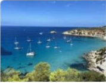

AGENCIA DE VIAJES "EL PUNTUAL"
Programa tu viaje
En puntual.com Bolivia tenemos las mejores
ofertas de viajes,hoteles y vuelos baratos al mejor precio.
!reservas
ahora con nosotros!
Las mejores ofertas de viajes desded Bolivia
Nuestros destinos mas vendidos
- Mallorea
- Es una isla espanola situada en la parte central
del archipielago balear, en el mar Mediterraneo.
- Rio de Janeiro
- Es un enorme ciudad costera de brasil famosa por sus playas de
Copacabana e ipanema
- Punta deL Este
- Es un balneario que se encuentra en una angosta peninsula del sudeste de Uruguay.
- Ibiza
- es una de las islas Baleares, un
archipielago de Espana en el mar Mediterraneo.
es conocida por la animada vida nocturna en la ciudad de
Ibiza y San Antonio.
donde importantes clubes nocturnos
europeos tienen sucursales de verano
